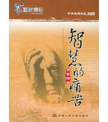

百家讲坛全集
>
百家讲坛2001~2003
>
百家讲坛 智慧的痛苦

名称：
集数：
播出时间：
百家讲坛 智慧的痛苦
13
2001年07月19日
分集介绍
《百家讲坛》 智慧的痛苦 （一） 孝的艰难与动人
播出时间：
主讲人：
介绍：
2001年07月19日
张祥龙
《百家讲坛》 智慧的痛苦 （二） 中国的南北差异
播出时间：
主讲人：
介绍：
2001年07月13日
胡兆量.
《百家讲坛》 智慧的痛苦 （三） 儒学与人生
播出时间：
主讲人：
介绍：
2001年07月31日
钱逊
《百家讲坛》 智慧的痛苦 （四） 老子的自然之道
播出时间：
主讲人：
介绍：
2004年03月26日
颜世安
《百家讲坛》 智慧的痛苦 （五） 传统对于我们意味着什么
播出时间：
主讲人：
介绍：
2002年12月25日
郑家栋
《百家讲坛》 智慧的痛苦 （六） 古代文明的演进与儒家思想的根源
播出时间：
主讲人：
介绍：
2001年08月15日
陈来
《百家讲坛》 智慧的痛苦 （七） 科学精神与人文精神
播出时间：
主讲人：
介绍：
2003年05月16日
袁正光
《百家讲坛》 智慧的痛苦 （八） 存在与人生
播出时间：
主讲人：
介绍：
2003年09月09日
何光沪
《百家讲坛》 智慧的痛苦 （九） 智慧的痛苦
播出时间：
主讲人：
介绍：
2003年11月13日
张志伟
《百家讲坛》 智慧的痛苦 （十） 现代性与中国文化走向
播出时间：
主讲人：
介绍：
2002年04月05日
王岳川
《百家讲坛》 智慧的痛苦 （十一） 走向文化的多元化生
播出时间：
主讲人：
介绍：
2003年01月08日
王一川
《百家讲坛》 智慧的痛苦 （十二） 文化与经济
播出时间：
主讲人：
介绍：
2003年06月10日
胡兆量
《百家讲坛》 智慧的痛苦 （十三） 人类学与文化寻根
播出时间：
主讲人：
介绍：
2002年12月24日
叶舒宪